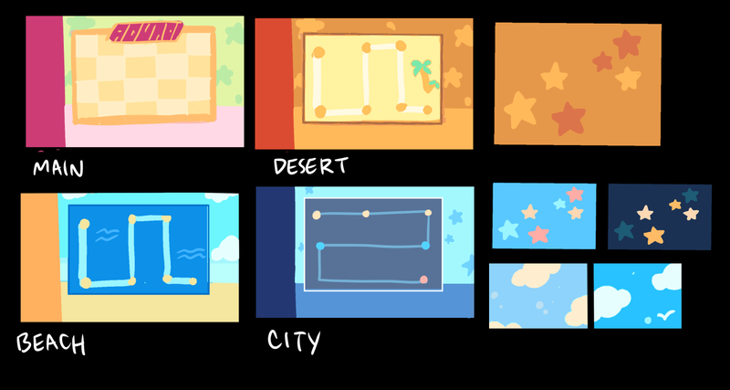
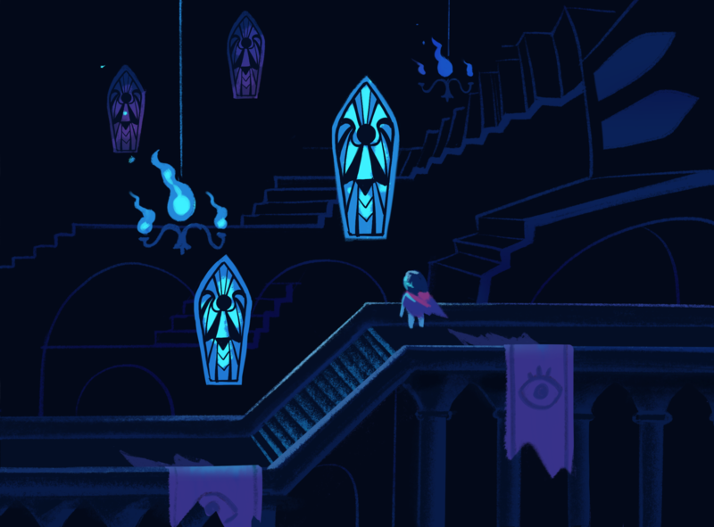

ВСПОМНИМ 3 и 4 ГЛАВУ!
3 ГЛАВА
{kind=link}
Concept art by Gigi DG
3 глава...
Я начал продумывать идеи для неё, как и для всех остальных, примерно в 2016 году. Концепция была такой: "В качестве перерыва от привычной формулы, давайте сделаем безумную настольную игру в стиле Mario Party! И пусть будет телевизионный персонаж, похожий на Меттатона!" Игра Ghost Trick еще была свежа в моей памяти, и мне уж очень понравилась трёхмерная графика в ней, поэтому я захотел создать 3D-персонажа с похожей привлекательностью. Примерно в то же время я купил Kinect и попробовал заняться захватом движений, думая, что смогу совместить его с MikuMikuDance, чтобы создать безумно танцующего 3D телевизионного персонажа, вдохновленного Мистером ТВ Динной.
Я сочинил музыку для "ТВ Мира" в 2015 году. Использовал файл проекта для боевой темы Меттатона в качестве основы. Ближе к релизу я модифицировал её, чтобы добавить лейтмотив из Hip Shop/Green Room.
На самом деле, в 2018 году я начал работать над совершенно другой концепцией ТВ Мира, которая больше фокусировалась на мотивах из остальной части главы... но реакция моих друзей на нее была примерно такой: "Да... конечно... неплохо..." и я подумал... ладно... хорошо... вернусь к прошлому варианту...
(примечание: этот саундтрек не закончен, поэтому не воспринимайте его всерьез)
Я нарисовал Тенну в 2017 году. До этого момента его звали "Мистер ТВ Чел".
{kind=link}
{kind=link}
Концепт-арт от Тоби
Вообще, сначала я попросил Kanotynes сделать его в 3D. Но, по-моему, у нас уже не осталось никаких файлов с того времени.
Gigi сделала вращающуюся модель по моему концепт-арту, и это стало основой для 3D-модели PixelatedCrown.
{kind=link}
{kind=link}
Концепт-арт от Gigi DG
Word Art был создан Одри Ванером и анимирован Everdraed. Концепция персонажа, говорящего с помощью Word Art, была вдохновлена П.Т. Бриджпортом из комикса "Пого".
{kind=link}
{kind=link}
Концепт-арт от Gigi DG
Доделать графику хоть и заняло много времени, но это не стало каким-то препятствием... Если в 3 главе и было препятствие, то это был геймплей.
{kind=link}
Concept art by Gigi DG
Я перебрал множество идей для игровых досок. Изначально я хотел, чтобы это было похоже на Mario Party или базу Блэка из Gunstar Heroes... затем я понял, что создание такого будет не только неэффективным, но и приведет к тому, что в главе будет мало контента для исследования. Поэтому мы переключились на карту мира в стиле Super Mario Bros. 3, содержащую множество мини-карт в стиле Zelda... позже я просто решил, что лучше всего будет, если все будет одной большой картой, объединенной вместе..
Потом встал вопрос о мини-играх. Я серьезно недооценил, количество усилий которые они потребуют. Думаю, конечный результат получился довольно забавным, но я не думаю, что взялся бы за это, если бы знал, насколько это будет сложно и трудоемко.
Поскольку глава состояла из множества разрозненных частей (мини-игры, доски, сцены), создаваемых независимо друг от друга, было очень трудно определить темп игры, пока почти все не было собрано. После этого стало ясно, что темп игры проседает...
Таков был первоначальный замысел игры, до того, как что-либо было сделано:
- 1 Доска (Пустыня)
- Кулинарная мини-игра
- 2 Доска (Остров)
- Ритм игра
- 3 Доска (Большой город)
- Сьюзилла & Ковбой
- 4 Доска (Тенна управляет игрой)
- ТВ Мир
В то время я предполагал, что доски будут проходиться гораздо быстрее. Только городской уровень был бы больше, с одной мини-игрой в каждой половине города. Прохождение обеих игр позволило бы попасть на телебашню, что запустило бы последовательность событий, которая в итоге привела бы к четвертой доске.
(В первоначальной концепции не было комнаты S-ранга.)
После того, как мы написали код для большей части игры, вот что у нас вышло:
- 1 Доска [в стиле З*льды]
- Кулинарная мини-игра
- 1 Зелёная комната
- Первая комната S-ранга
- 2 Доска [в стиле З*льды]
- Ритм игра
- 2 Зелёная комната
- Вторая комната S-ранга
- 3 Доска [в стиле З*льды, переработана так, чтобы быть намеренно короткой]
- Обманом заставить Тенну дать тебе перерыв от 3 Доски
- 3 Зелёная комната
- Третья комната S-ранга
- Закулисье
- 2 часть 3 Доски
- Сьюзилла
- 4 Доска
- ТВ Мир
Мы на самом деле создали третью доску! Но мы попытались сделать ее короткой, потому что игра затягивалась без типичного геймплея Дельтаруна.
{kind=link}
{kind=link}
{kind=link}
{kind=link}
Из-за этого мы также добавили область между каждой "половиной" 3 Доски, закулисную зону. Она была деревянной и в ней активно использовалась механика стелса. Именно здесь вы изначально сражались с Правилусом Каартом."
{kind=link}
{kind=link}
{kind=link}
{kind=link}
После победы над ним вы получали контроллер, который позволил бы вам играть за Эльнину на Доске. Она могла бы устроить настоящий потоп слез, что позволило бы вам получить доступ к ключ-карте, которая дала бы возможность пропустить оставшуюся часть 3 Доски...
... Несмотря на попытки добавить закулисье как глоток свежего воздуха, это только ещё больше растянуло игру. Наблюдая, как друзья играют в эту версию, все как-то уставали после второй доски. Так что нам пришлось ее сократить!
В финальной версии игры у нас было вот что:
- 1 Доска [в стиле З*льды]
- Кулинарная мини-игра
- 1 Зелёная комната
- Первая комната S-ранга
- 2 Доска [в стиле З*льды]
- Ритм игра
- 2 Зелёная комната
- Вторая комната S-ранга
- ТВ пазлы
- 4 Доска
- ТВ Мир (+ элементы из мира за кулисами, вроде стелс механик)
- Третья комната S-ранга
В итоге, мы вырезали 3 Доску. Единственное, что от нее осталось, было помещено в комнату S-Ранга. (Так ведь лучше, правда?) Игра Сьюзиллы стала необязательной, а действительно приятные части закулисья были оставлены в ТВ мире.
Некоторые люди придерживаются мнения, что чем больше активностей, тем лучше... но, когда вы рассматриваете всю игру со всеми её главами как цельный опыт, вы действительно не хотите, чтобы какая-то одна глава все тормозила.
Особенно учитывая, что, как я и предполагал, эта глава оказалась весьма спорной. Честно говоря, я думал, что половину игроков могут её возненавидеть, даже если другая половина будет от неё в восторге. Но, похоже, большинство людей всё же остались довольны, так что я просто рад.
"Я очень рад, что хоть кому-то это понравилось!" Вот как я себя чувствую.
ГЛАВА 4
Глава 4 далась намного легче!!
{kind=link}
{kind=link}
{kind=link}
{kind=link}
{kind=link}
Концепт-арт от Gigi DG
Несмотря на это, у нас было несколько небольших сложностей.
Изначально механика карабканья просто использовала механику обычного перемещения по миру но... с графикой карабканья. Результат ощущался вялым, поэтому я сам запрограммировал новую систему. Это одна из немногих вещей, которые мне довелось программировать, так что я могу этим гордиться.
Еще одно изменение коснулось планировки Темного Святилища. Изначально я хотел создать гигантское нелинейное взаимосвязанное подземелье, похожее на что-то из Зельды. Однако нелинейная структура затрудняла последовательное развитие сюжетных событий, из-за чего появление Старика ощущалось очень слабо. Поэтому структура была изменена на линейную, как и всё остальное (лол).
В конце концов, если и была какая-то часть, которую было особенно неприятно создавать, так это локация в доме Ноэлль. Поскольку мы вводили новую механику, мне очень хотелось, чтобы вы почувствовали, что она не была использована впустую. Моей первой идеей было, что вам придется собирать машину Голдберга, состоящую из множества безумных деталей. Например, вам нужно было запустить лакомство с помощью специальной машины в ванную комнату, что привлекло бы голодного Азгора, дабы он сел между Сьюзи и Ноэлль...
Затем, когда мы поняли что выглядеть это будет странно, мы попробовали установить игрушечный поезд, который бы проходил через весь дом, и сделать вокруг этого головоломки.
У меня было столько проблем, что в итоге я попросил своего друга Эндрю Хасси помочь мне с идеями.
Я хочу предложить идею, которая, возможно, прозвучит очень [отредактировано], но давайте попробуем её развить и посмотрим, к чему это приведёт.
Представьте, что вместо фигурки Снупи, ловящего лакомства, в центре стола возвышается огромный бюст кричащего Маколея Калкина, в его легендарной позе:
Только это не обязательно должен быть буквально Маколей. Это может быть любой персонаж, который больше подходит по смыслу в рамках мира. Давайте пока просто скажем, что это Папирус.
Еще одно ключевое отличие заключается в том, что в первоначальном виде бюст не имеет двух рук по бокам головы. Это отдельные детали, которые находятся в другом месте дома. Чтобы продолжить, нужно закончить бюст. Причиной всего этого послужит [отредактировано] . Бюст постоянно опрокидывается и разрушает все, поэтому его необходимо укрепить с обеих сторон двумя поддерживающими каменными руками.
ПОЧЕМУ БЮСТ ВСЕ ВРЕМЯ ПАДАЕТ?
Это ключевое событие, которое должно часто и естественно повторяться, чтобы головоломка работала. К счастью [отредактировано] ответ на этот вопрос очевиден, ведь он уже дан прошлой сценой. Азгор отмывает ванную комнату. К этому времени он уже принялся драить душевую кабину (вам нужно будет отодвинуть занавеску, чтобы его увидеть). Но пол очень скользкий, поэтому он постоянно падает на задницу и сотрясает весь дом. Является ли это хронической случайностью, вызванной нелепыми выходками, — открытый вопрос. Возможно, Крис пробирается через вентиляцию и лопает маленький бумажный пакетик, чтобы его напугать. [отредактировано][отредактировано][отредактировано].Дело в том, что это просто случается каждый раз, когда это нужно.
ЧТО СЛУЧИТСЯ ЕСЛИ БЮСТ УПАДЕТ?
Каждый раз, когда он падает на пол и начинает кататься, как неуправляемый шар для боулинга, разрушая нужные вам вещи, вам нужно решить головоломку с печеньем. Сначала он катится в правую сторону, пока вы не найдете правую руку и не вставите её на место.
В конце концов, я понял, что лучше всего сосредоточиться только на истории и атмосфере, и поэтому мы в итоге переделали всё ещё раз. Думаю, получилось здорово.
Мне кажется, эта глава понравилась почти всем!
{kind=link}
{kind=link}
{kind=link}
Концепт арт от Тоби Фокса
Кстати, "Молот Справедливости" - это еще один саундтрек, над которым я начал работать в самом начале 2016 года. Думаю, финальная аранжировка получилась неплохой, но поскольку я не занимался ею семь лет, основной версией, которую я помню, остается первоначальный набросок для фортепиано.
СОСТАВ ОСНОВНОЙ КОМАНДЫ
Мне кажется, что титры могут быть недостаточно ясны, поэтому давайте немного поговорим о основной команде.
Те кто были до 2 главы
Сара - Запрограммировала большинство кат-сцен в 3 и 4 главах, занималась внедрением локализации, выпуском патчей и сборкой игры для всех платформ, а также помогала с тестированием и организацией. Пришлось трижды переделывать сцену с домом Ноэлль. Периодически рисует комиксы для журнала и выращивает гидропонные растения в переработанном мусоре. Вырастила авокадо в ведре из-под попкорна от Спамтона.
цитата: "Каждый раз, когда я работала над сценой с подносом закусок в 4 главе, мне хотелось сырного крекера."
Фред - запрограммировал доски для третьей главы и большую часть комнат в третьей и четвертой главах. Его любимая еда — тако, и он чуть не оставил упоминание про это в игре. Также он работал над игрой под названием LOVE.
Джин - запрограммировала логику боссов и врагов, а также создала все ДЕЙСТВия. Также сделала все атаки для Правилуса / Ланиньо / Эльниньо. Работала над игрой под названием Death's Gambit.".
Тэкс - сделал ритм-игру, а также некоторые другие сложные визуальные моменты, такие как падение Криса в пророчество и Сьюзи с Титаном. Также создал такие атаки как, Звездная атака Рыцаря, разрезание поля битвы, и атаки Затворы. Создал проект под названием Moment to Midnight
Темми - тем. Нарисовала практически всё. Также какое-то время была очень увлечена выпечкой.
Тоби - что-то сделал
Новички с 3 главы
Алекс - Создал множество паттернов атак, а также запрограммировал Сьюзиллу. Разработал все атаки Титана, а также круговую и финальную атаку Рыцаря.
PureQuestion - Программировал множество паттернов атак, включая атаки Джекинштейна, и большинство обычных врагов. Вместе с Алексом создал игру под названием Star of Providence
Новички с 4 главы
Энджи - Занимался башней Титана и несколькими комнатами светлого мира в 4 главе, всем эксклюзивным контентом для Switch 2 и Плуи. Теперь главный программист светлого мира для 5 главы.
цитата: "Думаю, моя любимая часть разработки Главы 4 была тогда, когда мне довелось какое-то время сражаться с двумя котами одновременно. Хотел бы я заниматься этим в реальной жизни 24 на 7"
Joost - Он собрал все локации, визуальные и фоновые детали для 4 и 5 главы!
SaraJS - Занималась различными визуальными эффектами и сложными программными задачами. Помогала с освещением, пророчествами и атаками Статуи Справедливости в 4 главе. Сейчас создаёт кат-сцены для 5 главы.
Энди - Он создал 3 Майков, а также игры Жонглёр и Баттат. Сейчас работает над вещами, которые даже он сам не понимает. Создал игру Knuckle Sandwich.
цитата: "Мне пришлось перенести свое рабочее место в другую комнату, потому что я слишком сильно кричал в микрофон."
Роберт – Продюсер, который питает слабость к пожилым японским мужчинам и истории. Хотя обычно он не участвует в основном процессе разработки, он занимается организацией команды, управлением задачами и консультированием по вопросам публикации. Возможно, на самом деле является лягушкой.
Гости
Онди - Как гость, помог пройти мини-игру с готовкой. Также создал важные вещи для 5 главы. Создал Треш-Башеры (и не только!)
Джеймс - Как гость, помог протестить игру про ковбоев. Также создал то торнадо, когда все одновременно крутятся в ДЕЙСТВии.
????? - Запрогроммировал атаки Боссов в 5 главе